Obsah
Itálie
Francie
Anglie
Španělsko a Portugalsko
Německo a další země
Čechy
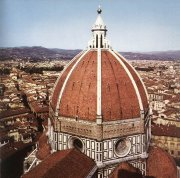
Humanismus
Koho dnes označujeme výrazem renesanční člověk?
Vysvětli význam slov humanizace, humanista, humanita, humanitární, humanitní a humánní.
|
RENESANCE
Kolébkou renesance (14. až 16. stol.) se stala Itálie, protože tradice starověkého Říma zde byly nejživější. Hlavním programem renesančních autorů byl návrat k antice a sám název renesance znamená znovuzrození. Renesanční umělci se vyjadřovali o středověké kultuře velmi neuctivě, vzorem se stává umění starověkého Řecka a Říma. Oživuje se antická mytologie a filozofie. Renesanční autoři ale zůstávají křesťany a své umění dávají často do služeb církve. Ta zůstává díky svému bohatství největším zadavatelem architektonických staveb i výtvarných děl. Další díla vznikají na objednávku bohatých mecenášů. Po vzoru antiky roste význam umělcovy osobnosti. Většinu renesančních autorů známe jménem a zachovaly se i jejich životopisy. Také jednotlivá díla už mají názvy, které jim dali jejich autoři, ne pozdější editoři.
Humanismus
Humanismus se soustředil na studium člověka. Zatímco termínem renesance označujeme hlavně umělecké projevy, humanismus je myšlenkové hnutí, které zahrnuje i vědecká zkoumání (studia humanitas). Humanisté pěstovali hlavně společenské vědy (filozofie, historie, národopis), studovali díla řeckých autorů a šířili vzdělanost.
|
Historie
Za počátek novověku je považováno objevení Ameriky Kryštofem Kolumbem v roce 1492. Nástup renesance v Itálii ale začal už ve 14. stol. a během 15. stol. se humanismus prosazuje v celé Evropě. Zatímco Itálie a Německo jsou rozdrobené na malá knížectví, Francouzi a Angličané vytvořili silné státy. V roce 1492 se Španělsku podařilo vyhnat Araby z Pyrenejského poloostrova a spolu s Portugalskem se stává největší námořní velmocí, která dobývá bohaté říše amerických indiánů. Střety mezi katolíky a protestanty vedly k třicetileté válce (1618-1648), která skončila novým rozdělením Evropy.
|
Věda
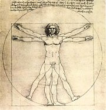
Leonardo da Vinci: Proporce lidského těla
|
Věda
Humanističtí vědci se nespokojili s teologickými spekulacemi středověkých filozofů nad katolickými dogmaty. Začali více pozorovat život a všímat si přírodních zákonitostí. Lékaři zkoumali pomocí pitev lidské tělo. Astronomové (Mikuláš Koperník a Johannes Kepler) přišli se zcela jinou představou uspořádání vesmíru. Církev se novým poznatkům bránila po svém – Galileo Galilei musel své učení odvolat, Giordano Bruno (+1600) byl dokonce upálen. Přes nové vědecké objevy a technické vynálezy narůstá obliba astrologie (Kepler sestavil horoskop pro Albrechta z Valdštejna, ve kterém velmi přesně předpověděl jeho osud), alchymie (hledání kamene mudrců a elixíru života, proměna rtuti ve zlato) i věštectví (Nostradamovo prorctví).
|
Alchymie
Alchymie byla tajná (hermetická) nauka založená na studiu Smaragdové desky a dalších knih připisovaných Hermu Trismegistovi. Tyto texty byly zcela nesrozumitelné a do jejich pravého významu musel učedníka zasvětit mistr. Víra v horoskopy, znamení zvěrokruhu a různé způsoby věštění budoucnosti přetrvává dodnes.
|
Reformace
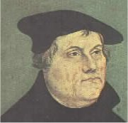
|
Reformace
Církev se musela vyrovnávat s kritikou po celý středověk. Kromě přesvědčování a zastrašování sahala i k tvrdším prostředkům (upalování kacířů, křížové výpravy proti heretikům). V době papežského schizmatu (1378-1417) byla kritika druhé strany přímo žádána. Středověcí kazatelé (Viklef, Hus) si všímali odklonu církve i duchovenstva od původních ideálů křesťanství. Nelíbilo se jim, že papež usiluje o světskou moc, církev hromadí majetky, kněží porušují Desatero a lidé žijí nemravně. Luther, Kalvín a další reformátoři přestali věřit v nápravu katolické církve, a proto založili na počátku 16. stol. nové církve protestantské.
|
Které protestantské církve znáš?
|
Výtvarné umění
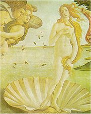
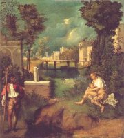
|
Architektura, malířství, sochařství
Renesanční umění zpracovává kromě tradičních křesťanských námětů hlavně výjevy z antické mytologie a historie, vznikají portréty významných osobností a řada světských staveb. V malířství se prosazuje perspektiva, anatomická věrnost a kult krásného nahého těla. Vznikají nové techniky – freska (malba do vlhké omítky), sgrafito (proškrabávání svrchní vrstvy omítky), sfumato (šerosvit) a lazura (nanášení průsvitných vrstev). Sochy se tesají z mramoru nebo odlévají z bronzu a většinou jim chybí polychromie (barevnost), protože nalezené antické sochy, které sloužily jako vzor dokonalosti, ji dávno ztratily. V architektuře se prosadily antické prvky (půlkruhový oblouk, kopule, hlavice sloupů...), dbá se na přesné proporce a stavby jsou navrhovány spíše do šířky než do výšky. Středověké hrady nahradily honosné zámky a vily. Na konci renesance se prosadil manýrismus (manus je latinský výraz pro navyklý pohyb rukou), který nakonec vystřídalo baroko.
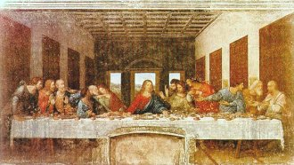
|
Poznáš tato renesanční díla a jejich autory?
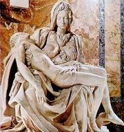
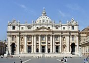
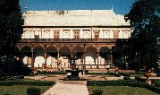
|
Dobytí Ameriky
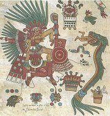
|
Indiánská kultura
Evropští dobyvatelé (Cortés, Pizarro...) chtěli v Novém světě (Amerika) hlavně zbohatnout. Kulturu původních obyvatel nerespektovali, a pokud je rovnou nevyvraždili, nutili je přestoupit na katolickou víru. Ani vyspělé říše Mayů, Aztéků nebo Inků jim nedokázaly čelit, a tak Evropané postupně ovládli celý kontinent. Naštěstí si indiáni uchovali své tradice dodnes. Mayská mytologie se dochovala v kodexu Popol Vuh. Další informace o indiánské kultuře můžeme čerpat z dobových cestopisů. Mayové a Aztékové používali složité hieroglyfické písmo a měli přesnější kalendář než Evropané. Věřili, že jejich bohové vyžadují krvavé lidské oběti.
|
Indiánská kultura
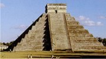
Co víš o indiánské kultuře?
Znáš indiánské mýty?
|
Renesanční písemnictví
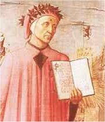
Dante Alighieri
|
Renesanční písemnictví
Latina zůstává univerzálním jazykem, kterým se domluvili všichni evropští vzdělanci. Prosazuje se také studium klasické řečtiny. Většina literárních děl ale vzniká v národních jazycích a místních nářečích. Italsky psali Dante, Petrarca a Boccaccio, francouzsky Villon, Rabelais a Montaigne, anglicky Chaucer a Shakespeare, španělsky Cervantes a německy Sachs. V Čechách se prosazuje humanismus o něco později, protože byly v 15. stol. sužovány husitskými válkami, a má hlavně vzdělavatelský ráz (překlady, teoretická pojednání).
Středověké fantastické cestopisy nahradily popisy ideálních společností (Morova Utopie, Campanellův Sluneční stát a Baconova Nová Atlantida). Autoři se více zajímají o světský život – politiku (Machiavelliho Vladař) nebo fyzickou lásku (Boccacciův Dekameron). Velké oblibě se těšily knížky lidového čtení (Faust, Enšpígl...).
|
Utopie
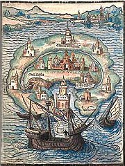
|
Renesanční divadlo
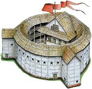
Rekonstrukce Shakespearova divadla Globe
|
Renesanční divadlo
Renesanční divadlo se profesionalizuje. Představení už neorganizuje církev nebo město (cechy), a proto se začíná vybírat vstupné. Herci většinou kočují z jednoho místa na druhé, ale stavějí se i první stálá soukromá divadla (Globe). Divadelní představení zůstává vděčným terčem kritiky ze strany církve, herci se netěší dobré pověsti a na jevišti stále nesmějí vystupovat ženy. Nejlepšího zajištění se dostává hercům divadel, která si vydržují panovníci. Oživuje se zájem o antické komedie i tragédie. Nové hry čerpají náměty z historie (Shakespearův Caesar nebo Jindřich IV.), pověstí (Marlowův Doktor Faust) i současnosti (Machiavelliho Mandragora). Komedie jsou často založeny na milostné zápletce. V Itálii si získává oblibu zvláštní druh divadla masek – komedie dell’arte. Na školách se provozovalo didaktické humanistické drama.
|
Shakespeare
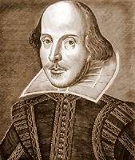
William Shakespeare
|
Knihtisk
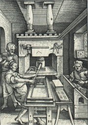
Využití vřetenového lisu v tiskařské dílně
|
Knihtisk
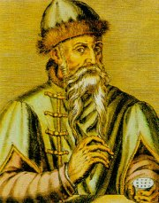 Knihtisk umožnil do té doby nevídané rozšíření literárních děl. Vynalezl ho německý zlatník Johannes Gutenberg (1400-1468), který působil v Mohuči a Štrasburku. Samozřejmě nevěděl, že podobným způsobem šířili své texty Číňané už v 9. stol. Gutenberg začal jako první odlévat jednotlivá písmena do matric. Skládal z nich stránky, které se daly opakovaně potřít černou barvou a otisknout na papír. K tomu se používal upravený vinařský lis. Obrazovou přílohu tvořily dřevoryty a jednotlivé stránky se před svázáním knihy ručně kolorovaly.
Nejstarším tiskem byl zřejmě zlomek knih Sibylliných (1445). Počet tiskařů rychle rostl a vydávané texty zahrnovaly všechny obory lidské činnosti. Knihy vytištěné do roku 1500 nazýváme prvotisky neboli inkunábule.
|
Gutenbergova Bible
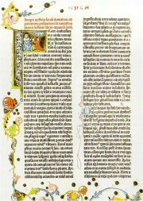
Nejnáročnějším Gutenbergovým projektem byla dvoudílná dvaačtyřicetiřádková Bible (1452-1455) a třídílná Bible třicetišestiřádková.
|
Internetové stránky
L'Occident et Gutenberg, knihtisk
Renesance, reprodukce
Renesance, manýrismus
Manýrismus, reprodukce
Giorgio Vasari
Mayský kalendář
Hermes Trismegistos, alchymie
Církve, odkazy
Kolumbus, informace
Kolumbus, informace
Exkurze
Šternberský palác v Praze, Evropské umění od antiky do závěru baroka
Žďár nad Sázavou, Dějiny knihy a knihtisku od počátků do současnosti
Vimperk, expozice o dějinách knihtisku
Tipy
Trigon, nakladatelství zaměřené na alchymii
|
Doporučená četba
Alberti, L.B.: Deset knih o stavitelství, Praha 1956
Bernal Díaz del Castillo: Pravdivá historie dobývání Mexika
Bohové starých Mayů, přel. E.Harantová, Volvox globator, Praha 1999
Coe, Snow, Benson: Svět předkolumbovské Ameriky, přel. P.Andělová, Knižní klub, Praha 1997
Černý, Václav: Soustavný přehled obecných dějin literatury naší vzdělanosti (2 díly)
České humanistické drama, Odeon, Praha 1986
Digrin, Zdeněk: Divadlo učenců a diplomatů, Divadelní ústav, Praha 1995
Fulcanelli: Příbytky filosofů (2 svazky), Trigon, Praha 1996 (alchymie)
Gorfunkel, A.Ch.: Renesanční filozofie, přel. O.Vochoč, Praha 1980
Jung, Carl Gustav: Představy spásy v alchymii, přel. P.Patočka, Brno 2000
Kneidl, Pravoslav: Z historie evropské knihy, Svoboda, Praha 1989
Lasenic, P. de: Hermes Trismegistos, Praha 1991
Molnár, Amedeo: Na rozhraní věků, Cesty reformace, Vyšehrad, Praha 1985 (Hus, Luther, Kalvín)
Pijoan, José: Dějiny umění, 5. a 6. díl
Pistorius, Vladimír: Jak se dělá kniha
Plumb, H: Renesance, Praha 1969
Popol Vuh, Mystická kniha Mayů, přel. I.Slavík, Dauphin, Praha 2000
Slovem obnovená, Čtení o reformaci, Kalich, Praha 1977
Stingl, Miloslav: Indiáni bez tomahavků, Orbis, Praha 1976
Vasari, Giorgio: Životopisy nejvýznamnějších malířů, sochařů a architektů, (2 svazky), Praha 1977
|
Připrav si referát o některé z uvedených knih nebo internetových stránek.
Vyber si nějakého renesančního umělce a zpracuj prezentaci o jeho životě a tvorbě.
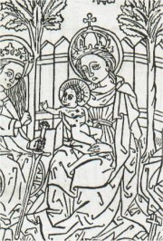
Bruselská Madona z roku 1418 (nejstarší evropský tisk)
|
|